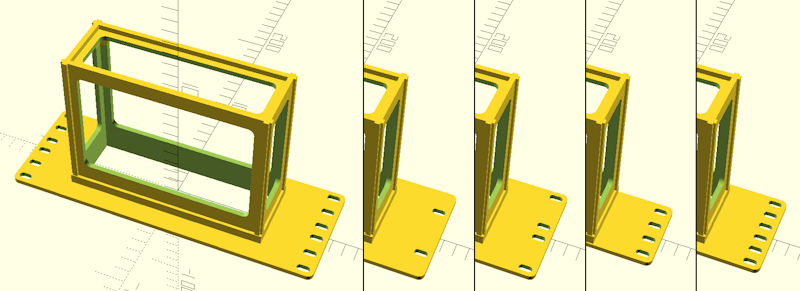
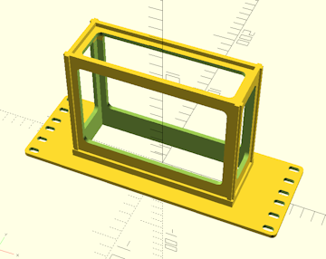
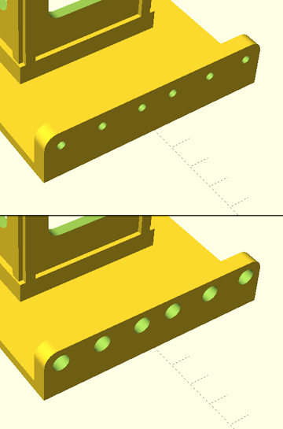
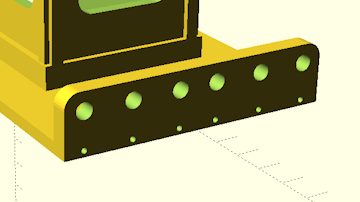
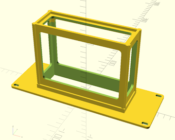
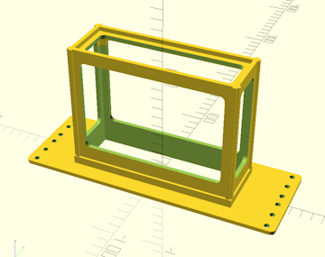
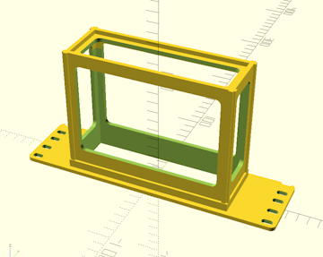
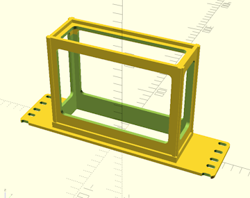

Home
Home

Configuration Options :: Rack Settings
These settings tell CageMaker PRCG about the rack it should generate cages to fit, when possible.
rack geometry
By default, CageMaker PRCG will create rack cages that comply with the EIA-310-D standard. This is the established standard used for 19" racks and has become the de facto "standard" for 10" mini-racks. This setting selects modifications to the standard, or as an alternative, ignoring the standard entirely for cases where a rack system has geometries that don't follow it.

When building cages for non-compliant rack systems, select the "unit" height and mounting hole spacing that matches those of the rack system. Note that the vast majority of racks and rack systems are EIA-310 compliant, and non-compliant cages will not fit on EIA-310 compliant racks, so this option should only be used if it's absolutely necessary.

custom rack geometry unit height
custom rack geometry mounting reservation area
custom rack geometry mounting hole center difference
custom rack geometry mounting hole diameter
custom rack geometry mounting hole pattern
new for version 0.70 :: These settings configure custom rack geometry, for situations where a preset doesn't exist. They are as follows:
- custom rack geometry unit height determines the height of one rack "unit."
- custom rack geometry mounting reservation area sets the space on both sides that CageMaker PRCG reserves for mounting.
- custom rack geometry mounting hole center inset sets how far in from the edges the rack rail's mounting holes land.
- custom rack geometry mounting hole diameter sets the screw hole diameter for the mounting holes, e.g., 5,25mm for a M5 screw.
- custom rack geometry mounting hole pattern sets how many mounting screw holes are created and how far down from the top edge of each unit a hole is positioned. This setting must consist of one or more values (in mm) separated by commas and surrounded by [square braces, such as [6.35, 22.225, 38.1] for an EIA-310 standard hole pattern.

These settings only take effect when rack geometry is set to "custom."
The specific aspects of a custom rack's geometry that CageMaker PRCG will use are illustrated here:

rack cage width
This determines the target size of the rack into which the cage is to be mounted. 5", 6", 7", 10", 12", 14", 16", and 19" will generate cages whose faceplates will cover the full rack width, 4.75" is a quarter-width cage for 19" racks, 5" is a half-width cage for 10" racks, 6.33" is a third-width cage for 19" racks, 9.5" is a half-width cage for 19" racks, and 12.66" is a two-thirds-width cage for 19" racks.
CageMaker PRCG will verify that this setting is wide enough to accommodate the device(s) to be caged plus the structure for the cage itself, multiplied by the number of devices to be caged, and will display a warning message in the console if the total size required is too large to fit within the selected rack size. Be aware that the support structure to hold the device will add 16-20mm to its dimensions depending on the current surface thickness setting, so a 120mm side device that's 35mm tall will require 136-140mm of width and 51-55mm of height to safely enclose, so be sure to compensate for the extra size requirements when planning on rack-mounting devices.
Half-, third-, and quarter-width cages will automatically include right-angle ears on one or both sides to allow partial-width cages to be bolted together to become a single unit the full width of the rack, so make sure to change the tap or heat set holes setting to select the fasteners to use to bolt these together - Ideally, select a clearance screw size for one side and the corresponding threading or insert size for the other.

tap or heat set holes
This setting determines the sizes of holes CageMaker PRCG creates for bolting partial-widths or split cages together. By default, the setting is 5.25mm, which is a close-tolerance clearance fit for M5. When choosing hardware for bolt-together half- and third-width cages, it's a good idea to select the desired bolt size's clearance fit for one side and the corresponding bolt size's tapping or heat-set insert diameter for the other side. When selecting hardware for split cages, CageMaker PRCG will automatically apply the close-tolerance clearance size to the tabs that bolt the cage halves together and use this setting for the tab-slot side.
Ensure the proper hardware is selected before rendering the completed cage object! If this is properly configured, holes for hardware should need minimal or no chasing with a drill, except in cases where the hole in the printed cage isn't adequately round because of how 3D printers handle holes on the same plane as the build plate.
If the add alignment pin holes option is enabled, alignment pin holes will be added to the bolt-together ears below each bolt hole.

add alignment pin holes
This setting will enable the addition of 1.75mm holes along mating surfaces for bolt-together and split cages, into which short lengths of filament can be inserted to act as alignment pins or dowels. This makes aligning the front (faceplate) of multiple cages or a multi-part cage assembly much easier.
The holes will probably need to be chased to ensure proper size and roundness. The ideal drill bit size for this is to start with a #51 bit (1.702mm) and follow with a #50 bit (1.78mm) if needed. The holes are 5mm deep, so segments of filament used as alignment pins need only be around 8-10mm long.

top and bottom holes only
By default, CageMaker PRCG will create mounting hardware holes (slotted for #10/M5 screws) for every screw hole location regardless of height, which is likely overkill for small lightweight devices. Enabling this setting instructs CageMaker PRCG to only create holes for the top-most and bottom-most hole locations.
Please note that this option also affects the generation of holes on bolt-together ears for partial-width cages.
Do not use this option with partial-width cages when mixing heights, e.g., bolting two 1U halves to a single 2U half, as this option will also remove the needed bolt holes from the bolt-together ears.

When the allow half heights option is enabled and the generated cage is a multiple of half units tall, the bottom-most hole will be the topmost hole closest to the top edge of the half-unit at the bottom of the cage. This is intentional as it prevents creating screw holes in weird places that may not align with screw holes or cage nuts on the rack's rails.

hole instead of slot
new for version 0.70 :: This setting changes the hole generation to produce single mounting holes instead of 5mm wide slots. While this may be aesthetically more pleasing, it has the disadvantage of potential alignment issues when the rack does not adequately comply with EIA-310 with regard to mounting centers.

allow half heights
This setting will instruct CageMaker PRCG to allow half-unit-height (0.5U or 7/8" or 22.225mm) multiples for cage heights instead of insisting on full units. This can make more compact racks, especially for mini (10") and micro (5"/6"/7") rack setups where the equipment in the rack is generally significantly smaller than typical equipment in a 19" rack. This makes completed cages asymmetrical vertically, however, but two half-unit-multiple cages can be mounted one above the other by flipping one of the two so that the stacked cages' half-holes meet.

vertically shift mounting holes
new for version 0.70 :: When allow half heights is enabled, the cages CageMaker PRCG generates are vertically asymmetric. While in most cases this won't cause issues - two half-unit-multiple cages can simply butt against each other - this may cause issues in rare cases such as when Keystone receptacles are used. Enabling this setting moves the mounting holes by the equivalent of one half-unit, essentially "un-flipping" the cage.

 Back To Top
Back To Top Navigate Site
Navigate Site Support This Project
Support This Project
 Community
Community
 Legal Notices & Information
Legal Notices & Information
 Copyright/Trademarks
Copyright/Trademarks